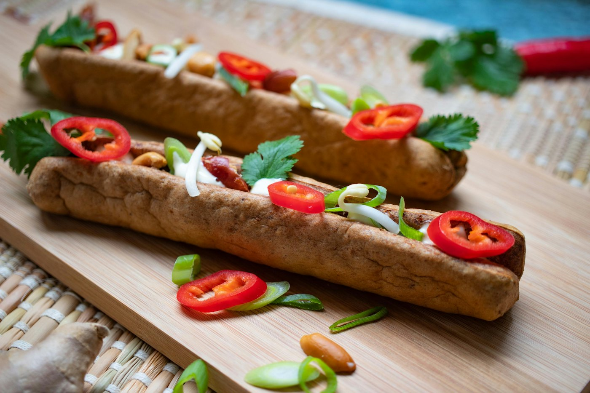

Cafetaria aan het Lavendelplein, Barneveld
Barnaby
Jouw trek, onze smaak.
Goudgele patat, Hollandse snacks en burgers vers van de plaat. Haal af of blijf gezellig zitten. Gratis parkeren voor de deur.
Ma t/m za 11:30 - 20:00, zo 16:00 - 20:00
Gratis parkeren voor de deur
Vers en lokaal bereid
Snelle service en gezelligheid
Waar heb je trek in?
 PatatPatat zoals het hoort: warm en krokant.
PatatPatat zoals het hoort: warm en krokant.

SnacksHollandse klassiekers uit de frituur. HamburgersSissend van de plaat, boordevol smaak.
Softijs & milkshakesVers bereid en bomvol smaak.
HamburgersSissend van de plaat, boordevol smaak.
Softijs & milkshakesVers bereid en bomvol smaak.
Favorieten van de zaak
- Boeren Burger spekjes, ui, champignons en Heinz Relish saus€ 8,95
- Loaded Fries Pulled Chicken friet, maar dan echt next level€ 9,95
- Barnaby Milkshake pistache, aardbei, banaan, chocolade, vanille of Buenovanaf € 3,00

Snacken zoals het hoort
In 2025 openden wij met trots de deuren van Cafetaria Barnaby. Onze missie? Mensen blij maken met echt lekkere snacks, goede service en een gezellige sfeer.
Barnaby begon als een klein familie-idee: een plek waar iedereen zich welkom voelt en kan genieten van echt lekkere snacks en goudgele patat. Bij ons draait het om meer dan patat en kroketten: het gaat om het gevoel dat je welkom bent, of je nu snel iets komt afhalen of gezellig blijft zitten.
We werken met verse ingrediënten, bakken met liefde en serveren alles met een glimlach. Ons team, met in de keuken chef Jennifer Jasadirana, staat altijd klaar voor een praatje, een grapje en natuurlijk jouw favoriete snack. Voor een snelle hap, een uitgebreide snackmaaltijd of een ijsje op een zonnige dag: bij Barnaby voel je je thuis.
Kom werken bij Barnaby
Ben jij 16 jaar of ouder? Je verdient goed, werkt in een gezellig team en bent tussen 20:00 en 21:00 uur klaar. Daarna heb je nog tijd voor leuke dingen.
Medewerker snackbar
Wie zoeken we?
- Minimaal 16 jaar
- Teamplayer met goed contact met mensen
- Kan onder druk presteren
- Flexibel
- Pré: beschikbaar in het weekend tot 20:30 (vrijdag en zaterdag)
Wat bieden we?
- Leuke collega's in een gezellig team
- Goede verdiensten
- Fijne werktijden
- Plezier
Solliciteren? Mail naar info@cafetariabarnaby.nl of kom even langs.
Openingstijden
| Maandag | 11:30 - 20:00 |
|---|---|
| Dinsdag | 11:30 - 20:00 |
| Woensdag | 11:30 - 20:00 |
| Donderdag | 11:30 - 20:00 |
| Vrijdag | 11:30 - 20:00 |
| Zaterdag | 11:30 - 20:00 |
| Zondag | 16:00 - 20:00 |
Cafetaria Barnaby
Lavendelplein 4
3773 CM Barneveld
0342 - 450 040
info@cafetariabarnaby.nl
Gratis parkeren voor de deur.